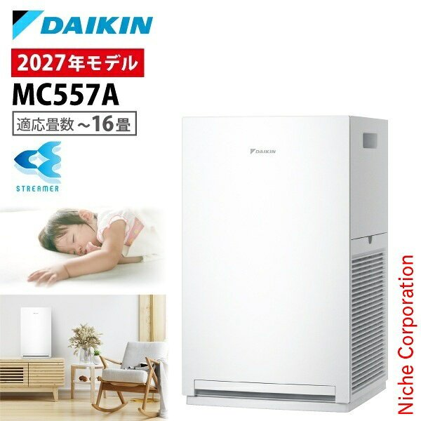
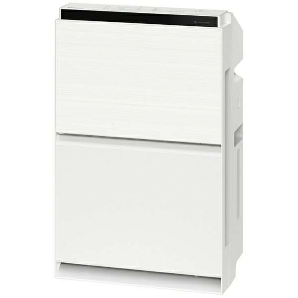
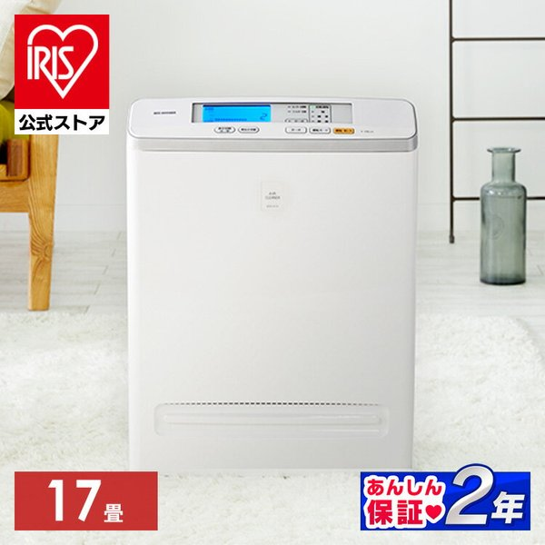
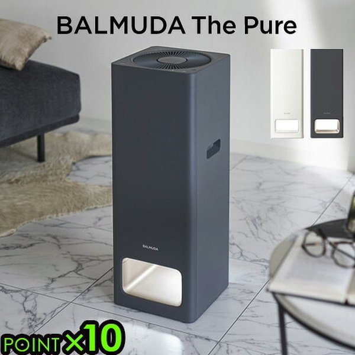
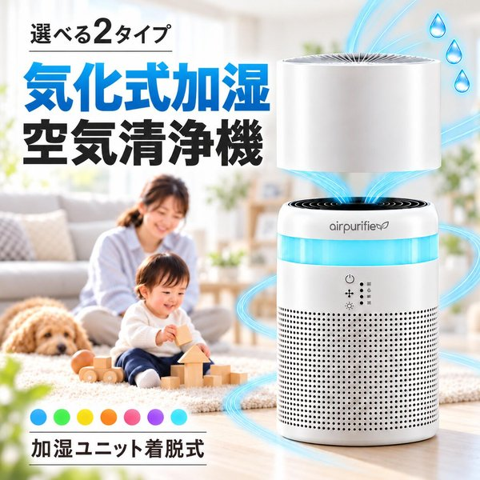
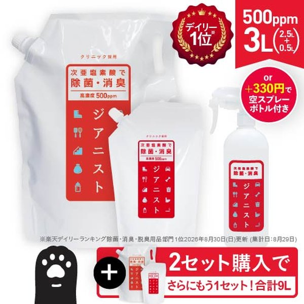
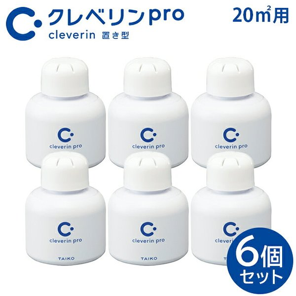
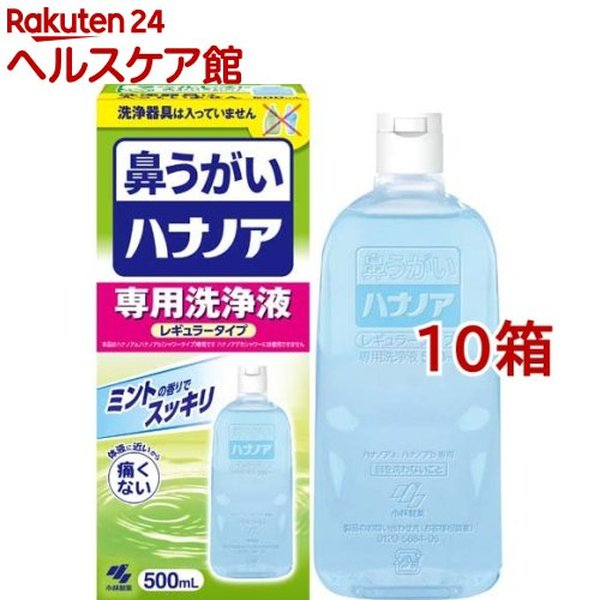

【2026年冬】乾燥・ウイルス対策に！空気清浄機＆除菌・喉ケアおすすめ10選
冬の部屋は、暖房で乾燥し、窓を閉める時間が長くなります。乾燥した空気は喉や鼻の粘膜を弱らせるので、加湿と空気清浄、そして喉そのもののケアをセットで考える季節です。
選ぶ軸は3つ。部屋の広さに合うか、加湿まで1台で担うか、そしてフィルターや消耗品の手入れを続けられるか。空気清浄機は「置ける場所」で決まる部分が大きく、寝室なら卓上サイズ、リビングなら18畳対応が目安になります。
本記事では、楽天市場で人気・高評価の空気清浄機＆除菌・喉ケア10選を、実売価格とレビュー評価つきで写真付き紹介します。
- おすすめ10選 スペック・特徴比較表
- BEST 1｜加湿空気清浄機 KI-RS40-W プラズマクラスター25000（空気清浄〜18畳／加湿〜12畳）
- BEST 2｜ストリーマ空気清浄機 MC557A（〜16畳）
- BEST 3｜ナノイーX4.8兆 加湿空気清浄機 F-VXW55-W（14畳）
- BEST 4｜空気清浄機 コンパクト 17畳対応
- BEST 5｜ザ・ピュア A01A
- BEST 6｜卓上コンパクト空気清浄機（3段階風速・静音）
- BEST 7｜次亜塩素酸水 500ppm スプレー（2.5L＋500ml）
- BEST 8｜クレベリンpro 置き型 20m2用（6個セット）
- BEST 9｜のどすっきり飴 ハーブ 88g（8袋〜）
- BEST 10｜ハナノア 鼻うがい専用洗浄液 500ml×10箱
- 【読者負担0円】買わなくても得する無料サービス
- まとめ：空気清浄機＆除菌・喉ケア10選の選び方
| 順位 | 商品名 | ブランド | 最大の特徴・おすすめ理由 | 総合評価 |
|---|---|---|---|---|
| BEST 1 | 加湿空気清浄機 KI-RS40-W プラズマクラスター25000（空気清浄〜18畳／加湿〜12畳） | シャープ | 加湿と空気清浄を1台で担える | 4.66 |
| BEST 2 | ストリーマ空気清浄機 MC557A（〜16畳） | ダイキン | ストリーマ放電で菌・ウイルス・ニオイを分解 | 4.69 |
| BEST 3 | ナノイーX4.8兆 加湿空気清浄機 F-VXW55-W（14畳） | パナソニック | ナノイーX4.8兆を搭載 | 5.00 |
| BEST 4 | 空気清浄機 コンパクト 17畳対応 | アイリスオーヤマ | 1万円台で17畳に対応 | 4.21 |
| BEST 5 | ザ・ピュア A01A | バルミューダ | インテリアに馴染むデザイン | 4.68 |
| BEST 6 | 卓上コンパクト空気清浄機（3段階風速・静音） | Forjoy Home | 6,000円台で試しやすい | 4.55 |
| BEST 7 | 次亜塩素酸水 500ppm スプレー（2.5L＋500ml） | ジアニスト | 500ppmの濃さで拭き掃除に使いやすい | 4.65 |
| BEST 8 | クレベリンpro 置き型 20m2用（6個セット） | 大幸薬品 | 置くだけで手間がかからない | 4.76 |
| BEST 9 | のどすっきり飴 ハーブ 88g（8袋〜） | 龍角散 | ハーブの清涼感で喉がすっきりする | 4.74 |
| BEST 10 | ハナノア 鼻うがい専用洗浄液 500ml×10箱 | 小林製薬 | 調整不要ですぐ使える | 4.73 |
加湿空気清浄機 KI-RS40-W プラズマクラスター25000（空気清浄〜18畳／加湿〜12畳）

シャープのスリムな加湿空気清浄機。プラズマクラスター25000を搭載し、空気清浄は18畳、加湿は12畳まで対応します。奥行きが抑えられた細身のボディなので、リビングの家具の隙間や寝室のベッド横にも置きやすく、冬の乾燥とホコリを1台でまとめて対策したい人に向いています。楽天市場での実売価格は約22,240円（2026年11月時点）。
- 加湿と空気清浄を1台で担える
- スリムで置き場所を選びにくい
- レビュー563件・評価4.66の実績
- 加湿タンクの給水とトレイの手入れが定期的に必要
ストリーマ空気清浄機 MC557A（〜16畳）

ダイキンのストリーマ放電で、浮遊する菌やウイルス、ニオイの元を分解する空気清浄機。16畳までの部屋に対応し、花粉対策製品認証も取得しています。ペットやタバコのニオイが気になるリビング、花粉の時期に窓を開けにくい部屋に向いています。楽天市場での実売価格は約45,100円（2026年11月時点）。
- ストリーマ放電で菌・ウイルス・ニオイを分解
- 花粉対策製品認証を取得
- レビュー605件・評価4.69
- 本体価格が4万円台で、フィルター交換にも数年ごとに費用がかかる
ナノイーX4.8兆 加湿空気清浄機 F-VXW55-W（14畳）

ナノイーX4.8兆を搭載したパナソニックの加湿空気清浄機。適用畳数は14畳で、加湿と空気清浄を同時に行います。家電量販店の正規品で、寝室からリビングまで1台でまかないたい人向けの上位モデルです。楽天市場での実売価格は約46,623円（2026年11月時点）。
- ナノイーX4.8兆を搭載
- 加湿14畳に対応
- 量販店の正規品でサポートが受けやすい
- 本体が大きく、設置場所の幅を確保する必要がある
空気清浄機 コンパクト 17畳対応

1万円台で17畳まで対応するアイリスオーヤマの空気清浄機。PM2.5や花粉、ペットの毛に対応し、部屋の隅に置けるコンパクトさが特徴です。初めて空気清浄機を買う人、寝室とリビングに1台ずつ置きたい人に向いています。楽天市場での実売価格は約14,800円（2026年11月時点）。
- 1万円台で17畳に対応
- コンパクトで置き場所に困らない
- フィルター交換の目安が分かりやすい
- 加湿機能は付いていない
ザ・ピュア A01A

バルミューダの空気清浄機「ザ・ピュア」。家具調のデザインで、リビングに出しっぱなしにしても生活感が出にくいのが特徴です。花粉やPM2.5、タバコの煙、ペットのニオイまでまとめて拾いたい人に向いています。楽天市場での実売価格は約64,900円（2026年11月時点）。
- インテリアに馴染むデザイン
- 強い風量で広い部屋にも対応
- レビュー62件・評価4.68
- 6万円台と価格は最上位クラス
卓上コンパクト空気清浄機（3段階風速・静音）

楽天で常連1位の卓上サイズ空気清浄機。3段階の風速と静音運転を備え、寝室の枕元やデスク横に置けます。PM2.5やハウスダスト、ペットの毛が気になる狭い空間向けで、まず1台試してみたい人の入口になります。楽天市場での実売価格は約6,180円（2026年11月時点）。
- 6,000円台で試しやすい
- 卓上サイズで寝室・デスクに置ける
- レビュー1,158件・評価4.55
- 適用畳数が狭く、リビング全体には力不足
次亜塩素酸水 500ppm スプレー（2.5L＋500ml）

500ppmの次亜塩素酸水を、スプレーボトル付きで届けるジアニスト。ドアノブやテーブル、キッチンの拭き掃除に使えます。アルコールがしみる素材や、薬品のニオイが苦手な場所の除菌に使いやすい一本です。楽天市場での実売価格は約1,980円（2026年11月時点）。
- 500ppmの濃さで拭き掃除に使いやすい
- スプレーボトル付きですぐ使える
- レビュー8,450件の定番
- 日光で劣化するため冷暗所で保管し、早めに使い切る
クレベリンpro 置き型 20m2用（6個セット）

置くだけの空間除菌・消臭剤クレベリンの業務用サイズ。二酸化塩素の力で、室内のニオイと浮遊菌に対応します。玄関やトイレ、寝室など、複数の部屋に同時に置きたい人向けの6個セットです。楽天市場での実売価格は約8,910円（2026年11月時点）。
- 置くだけで手間がかからない
- 20m2用×6個で部屋ごとに置ける
- レビュー236件・評価4.76
- 6個セットのため初期費用がまとまってかかる
のどすっきり飴 ハーブ 88g（8袋〜）
龍角散のハーブ系のど飴。88g入りを8袋からのまとめ買いで、乾燥する季節の喉ケアに常備できます。個包装なので、職場や車、バッグの中に分けて入れておけるのも便利です。楽天市場での実売価格は約2,118円（2026年11月時点）。
- ハーブの清涼感で喉がすっきりする
- 個包装で持ち運びやすい
- まとめ買いで1袋あたりが安い
- 8袋単位なので、味が合わないと在庫が残る
ハナノア 鼻うがい専用洗浄液 500ml×10箱

鼻うがい用の専用洗浄液。自分で食塩水を調整する手間がなく、花粉や乾燥で鼻の奥がつらい時期のケアに使えます。10箱セットなので、シーズン中に切らさず使いたい人に向いています。楽天市場での実売価格は約6,914円（2026年11月時点）。
- 調整不要ですぐ使える
- 花粉・乾燥期の鼻腔ケアに向く
- レビュー309件・評価4.73
- 専用の洗浄容器が別に必要
この記事の商品を買う前に、まずは無料で得する選択肢をチェック。どれも登録・利用は0円で、無料期間中に解約すれば料金はかかりません。読みたい雑誌がある人、ポイントを貯めたい人、アンケートなら気軽という人、それぞれに合うものを選べます。
初回31日無料・無料期間中に解約すれば0円 → 楽天ポイントモール｜登録無料で毎日ポイ活
買い物なしでもポイントが貯まる無料サービス → 楽天インサイト｜アンケートに答えてポイント
登録無料・すきま時間のアンケートで貯まる → 楽天カード｜年会費永年無料
新規発行・年会費ずっと0円 →
4つのサービスの違いと使い分けは「出費0円で得する！買わずにポイントが貯まる無料サービス厳選4選」でまとめています。
💡 まとめ：空気清浄機＆除菌・喉ケア10選の選び方
冬の対策は、空気をきれいにする機器と、喉・鼻の直接ケアの両輪で考えます。まず寝室かリビング、どちらに空気清浄機を置くかを決め、畳数に合うモデルを選ぶ。加湿が要るなら加湿機能付き、手入れを減らしたいなら空気清浄専用に割り切る。そのうえで、乾燥がつらい日は龍角散のど飴やハナノアの鼻うがいを常備しておくと、喉の違和感が長引かなくなります。
楽天市場では「5と0のつく日」や「お買い物マラソン」などのキャンペーンに合わせて購入すると、ポイント還元が最大化してお得に手に入ります。ぜひチェックしてみてくださいね。